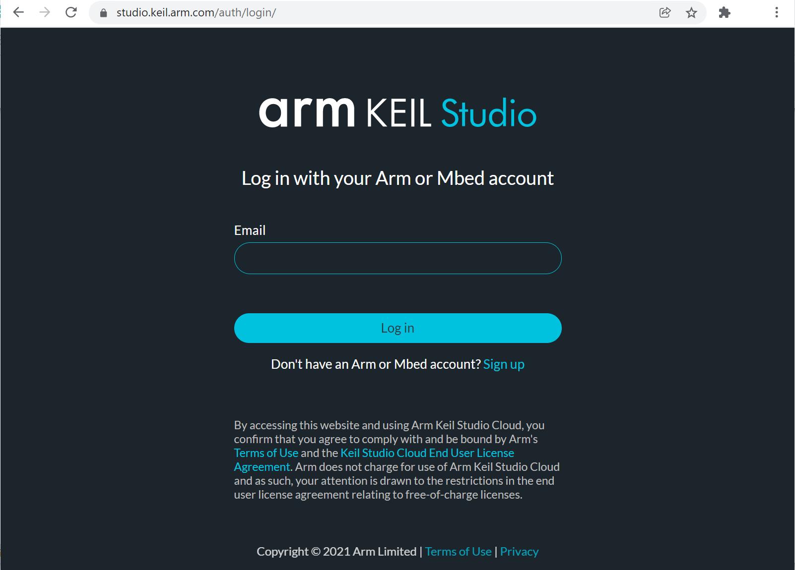

Keil Studio Cloud - Mbed#
▷ แนะนำ Arm Keil Studio Cloud#
บริษัท Arm / Keil ได้เปิดให้ทดลองใช้บริการซอฟต์แวร์ในระบบคลาวด์ที่มีชื่อว่า Keil Studio Cloud https://studio.keil.arm.com/ ตั้งแต่เดือนมิถุนายน พ.ศ. 2564 (06-Jun-2021: อ้างอิง) และเป็น Open Beta ซึ่งเป็นเวอร์ชันออนไลน์ (Web App) ของ Mbed Studio Desktop IDE หรืออาจจะมองว่าเป็นการอัปเกรดซอฟต์แวร์ จากเดิมที่ใช้ Keil MDK for Arm และ Arm Development Studio ให้เป็นเวอร์ชันที่ใช้ได้ฟรี
ในขณะที่จัดทำเอกสารนี้ เวอร์ชันล่าสุดคือ Keil Studio Cloud: v1.5.28 ผู้ใช้สามารถสมัครและสร้างบัญชีผู้ใช้ได้ฟรี หรือจะใช้บัญชีเดิมที่มีอยู่แล้ว หากใช้ใช้ Mbed Online Compiler

รูปภาพ: หน้าเว็บสำหรับ Login เข้าใช้งาน Keil Studio Cloud
▷ จุดเด่นของซอฟต์แวร์นี้#
- เป็น Web-based Online IDE ทำงานในเว็บเบราว์เซอร์ ใช้สำหรับการเขียนโค้ดสำหรับบอร์ดไมโครคอนโทรลเลอร์ที่ใช้ชิปตระกูล Arm Cortex-M Series ของหลายบริษัท เช่น NXP / STM / Nordic เป็นต้น
- ส่วนที่เป็น IDE ก็รองรับการใช้งาน IntelliSense สำหรับ Code Completion ซึ่งเป็นเครื่องมือที่มีการใช้งานอยู่ใน Microsoft Visual Studio
- ใช้ Arm Compiler 6 (LLVM / Clang-based) เป็นคอมไพล์เลอร์ทำงานอยู่เบื้องหลัง
- รองรับโปรเจกต์ 2 รูปแบบในการเขียนโค้ด คือ CMSIS กับ Mbed OS
- รองรับการใช้งานไลบรารี Mbed OS 5 / Mbed OS 6 / Mbed OS 2 (classis)
- ผู้ใช้สามารถนำเข้า (Import) โปรเจกต์จาก Online Mbed Compiler ได้
- รองรับบอร์ดไมโครคอนโทรลเลอร์ของหลายบริษัทผู้ผลิต
- ดูรายการบอร์ดได้จาก https://www.keil.arm.com/boards/
- สามารถเชื่อมต่อกับบอร์ดไมโครคอนโทรลเลอร์ที่รองรับรูปแบบอินเทอร์เฟสที่เรียกว่า Arm DAP-Link
- หรือถ้าใช้อุปกรณ์ ST-Link v2-1 / v3 (Firmware: J36 or later หากนำมาใช้กับ Keil Studio Cloud v1.5.28) ก็สามารถเชื่อมต่อได้เช่นกัน
- การเชื่อมต่อกับบอร์ดไมโครคอนโทรลเลอร์ใช้วิธีที่เรียกว่า WebUSB
- ดังนั้นเมื่อผู้ใช้นำบอร์ดมาเชื่อมต่อผ่านทาง USB ของคอมพิวเตอร์ผู้ใช้ และจับคู่ (Device Pairing) กับ Keil Studio Cloud ในหน้าเว็บเบราว์เซอร์ได้แล้ว ก็จะสามารถอัปโหลดไฟล์สำหรับเฟิร์มแวร์ไปยังบอร์ดได้สะดวก
- หรือจะเปิด Serial Monitor เพื่อรับข้อมูลผ่าน USB-Serial ของ DAP-Link
ที่ถูกส่งมาจากบอร์ดไมโครคอนโทรลเลอร์ก็ได้
- ต้องใช้กับบอร์ดที่รองรับการทำงานของ WebUSB-enabled CMSIS-DAP interface
- สามารถดีบัก (Debug) การทำงานของโปรแกรมในฮาร์ดแวร์ (In-Circuit-Debugging)
ในขณะที่เชื่อมต่ออยู่บนหน้าเว็บเบราว์เซอร์ได้
- ผู้ใช้สามารถกำหนดตำแหน่ง Breakpoint ในไฟล์ Source Code ได้ เพื่อให้โปรแกรมทำงานในฮาร์ดแวร์จริงแล้วมาหยุดที่บรรทัดดังกล่าวในโค้ด หรือจะรันต่อไปก็ได้
- ผู้ใช้สามารถศึกษาการใช้งานเพิ่มเติมได้จาก Arm Keil Studio Cloud - User Guide
รูปภาพ: หน้าต่างหลักของ Keil Studio Cloud IDE
▷ เริ่มต้นใช้งาน: Mbed LED Blink#
ขั้นตอนการสร้างโปรเจกต์ใหม่สำหรับเขียนโค้ดด้วย Mbed OS API มีดังนี้
- เมื่อได้ทำขั้นตอน Login เข้าสู่หน้าเว็บหลัก เลือกใช้งาน Mbed
- บริเวณด้านซ้ายมือของ Explorer จะให้ผู้ใช้เลือก "Active project" จากรายการที่มีอยู่แล้ว หรือจะสร้างขึ้นใหม่
- เลือกบอร์ดเป้าหมายที่จะใช้งานสำหรับโปรเจกต์ใหม่ โดยเลือกค้นหาจากรายการ "Target hardware" เช่น เลือกบอร์ด STM32 NUCLEO-F446RE
- สร้างโปรเจกต์ใหม่ โดยเลือกตัวอย่างเป็น "empty Mbed OS project"
- เปิดไฟล์
main.cppในโปรเจกต์เพื่อเขียนหรือแก้ไขโค้ดตามตัวอย่าง และบันทึกการเปลี่ยนแปลง - ทำขั้นตอน "Build project" (ดูตรงสัญลักษณ์รูปค้อน)
- ถ้าต้องการคอมไพล์ใหม่ทั้งหมด ให้เลือก "Build project > Clean build"
- ถ้าทำขั้นตอนได้สำเร็จ ไม่มีข้อผิดพลาดใด ๆ จะได้ไฟล์ .bin ที่ถูกดาวน์โหลดมายังเครื่องคอมพิวเตอร์โดยอัตโนมัติ
- ถ้าจะเปิดการดาวน์โหลดไฟล์ .bin โดยอัตโนมัติ ก็ทำได้ ให้ไปที่เมนู "Settings > Preferences > Build" และดูตัวเลือก "Download Binary"
- นำบอร์ดไมโครคอนโทรลเลอร์มาเชื่อมต่อกับพอร์ต USB ของคอมพิวเตอร์ผู้ใช้ และเชื่อมต่อผ่านทาง WebUSB
- ทำขั้นตอนรันโค้ดในฮาร์ดแวร์ (Run) หรือจะดีบักโค้ดในฮาร์ดแวร์ (Debug)
- เลือกบรรทัดในโค้ดที่ต้องการตั้งค่าให้เป็น Breakpoint หรือ ตำแหน่งหยุดการทำงานชั่วคราว และสามารถระบุได้มากกว่าหนึ่งตำแหน่ง
- สามารถดูสถานะการทำงานของโปรแกรมในฮาร์ดแวร์ได้ เช่น ค่าของตัวแปร หรือค่าในรีจิสเตอร์ของซีพียู เป็นต้น
รูปภาพ: เลือกสร้างโปรเจกต์ใหม่สำหรับ Mbed OS
รูปภาพ: เลือกบอร์ด STM32 NUCLEO เช่น NUCLEO-F446RE
รูปภาพ: เลือกโปรเจกต์เป็น "empty Mbed OS project"

รูปภาพ: เปิดไฟล์ main.cpp ในโปรเจกต์เพื่อเขียนหรือแก้ไขโค้ด
โค้ดตัวอย่าง: LED Blink
#include "mbed.h"
DigitalOut led(LED1); // use onboard LED 1
// main() runs in its own thread in the OS
int main()
{
int state;
printf( "Mbed OS 6 Demo - Nucleo LED Blink\n" );
printf( "Mbed OS version %d.%d.%d\n",
MBED_MAJOR_VERSION,
MBED_MINOR_VERSION,
MBED_PATCH_VERSION );
while (true) {
state = !led.read(); // update the new state
printf( "LED State: %d\n", state );
led = state; // update the LED state
ThisThread::sleep_for( 100ms );
}
}
รูปภาพ: ตัวเลือกการให้ดาวน์โหลดไฟล์ .bin โดยอัตโนมัติมายังคอมพิวเตอร์ผู้ใช้ หรือไม่
รูปภาพ: ทำขั้นตอน Build project ได้สำเร็จ
รูปภาพ: การจับคู่กับอุปกรณ์ (Device Pairing)
รูปภาพ: อุปกรณ์ USB ที่เชื่อมต่ออยู่ (เป็นบอร์ด NUCLEO-F446RE)
รูปภาพ: ทำขั้นตอนรันโค้ดในฮาร์ดแวร์ (Build & Run)
รูปภาพ: เข้าสู่โหมดดีบัก (Debug Session)
รูปภาพ: การทำงานของดีบักได้ถูกหยุดชั่วคราว เมื่อทำคำสั่งมาถึงตำแหน่ง Breakpoint
▷ กล่าวสรุป#
Keil Studio Cloud เป็นซอฟต์แวร์ประเภท Web App เพื่อใช้ในการพัฒนาโปรแกรมสำหรับบอร์ดไมโครคอนโทรลเลอร์ที่ใช้สถาปัตยกรรม เช่น Arm Cortex-M และทางบริษัท Arm Ltd. / Keil ได้เปิดให้ใช้บริการได้ฟรี ถือว่าเป็นอีกตัวเลือกสำหรับซอฟต์แวร์สำหรับงานด้าน Embedded Software Development แบบมืออาชีพ
This work is licensed under a Creative Commons Attribution-ShareAlike 4.0 International License.
Created: 2021-11-30 | Last Updated: 2021-12-02